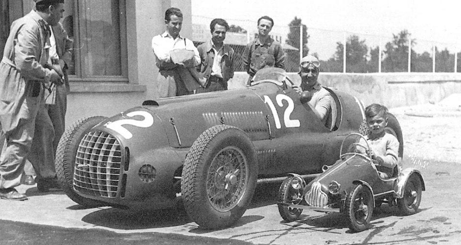

.
.
Când a început F1? Evident în 1950, ar spune majoritatea covârșitoare a fanilor. Complet greșit va replica orice istoric al fenomenului. Așadar când a luat naștere cel mai faimos și adulat sport motorizat?
Fosta AIACR (Asociația Internațională a cluburilor auto recunoscute) s-a reconstituit după război, transformându-se în FIA (Federation Internationale de l’Automobile). Comisia sportivă a FIA, CSI (Commission Sportive Internationale) s-a reunit pentru prima dată la Paris, în data de 28 februarie 1948 pentru a-și alege noul președinte. Acesta a fost Augustin Perouse. Sub conducerea sa directă s-au trasat regulile sub care urmau să se desfășoare cursele de GP, încercându-se continuarea pe baze noi a faimoasei ere 1934-1939, totuși fără instituirea inițială și a unui Campionat European.
Ultima formulă constructivă sub care se derulasera GP-urile contând pentru Campionatul European avusese parte de numai doi ani, 1938-39 și prevedea în esență două motorizări: 3l supraalimentat sau 4.5l aspirat, masa minimă a mașinilor trebuind să nu scadă sub 850kg. Datorită stării Europei de după nimicitorul război mondial, continuarea acelui regulamennt nu mai era posbilă din cauza costurilor uriașe. În plus, exceptând Mercedes și Auto Union – ce oricum erau excluse din orice competiție pe moment, numai Maserati și Alfa Romeo dețineau monoposturi cu propulsoare de 3l supraalimentate, dar acestea erau complet demodate și peste un deceniu trecuse peste ele. Alfa se orientase din 1939 către cursele Voiturette de 1,5l în timp ce Maserati își îndreptase atenția peste ocean, împunându-se la Indy 500. Mai mult, toate firmele implicate în racing începuseră dezvoltarea unor modele voiturette de mică cilindree încă dinainte de izbucnirea marii conflagrații, inclusiv cei doi giganți germani. Astfel că alegerea CSI nu a fost una grea.
Pentru a nu fi din nou un club exclusivist, în ședința din 21 iunie 1946 a CSI s-a hotărât că vor exista două formule constructive. Cea elitistă ce se dorea prelungirea ultimei formule dinainte de război și pentru care era permisă participarea unor monoposturi cu motoare de 1.5l supraalimentate sau 4.5l aspirate. Cea de a doua, propunea costuri mult mai reduse și era dedicată mașinilor cu motoare aspirate de până in 2l.Regulamentul urma să intre în vigoare în 1947 și era valabil până la finele anului 1951. Pentru a nu se pune mari piedici, regulile ce trebuiau respectate de participanți erau destul de vagi. În afară de cilindree, singurele reguli clare erau cele privind combustibilul.Acesta urma să fie furnizat de organizatori pentru 1947 și 1948 și trebuia să aibă două compoziții alternative: 1.metanol 70%, benzol 90 15%, acetonă 10%, benzină 5%, 2.alcool metilic între 94 și 98 grade, 85%, acetonă 6%, eter 7,5%, ulei de castor 1,5%. După 1948 alegerea combustibilului era liberă.
.
.
.
Inițial au fost denumite Formula A și Formula B. Dar pentru că în limbajul comun cea de-a doua a fost imediat adoptată drept Formula 2, formula elitistă 1500/4500cmc și-a schimbat și ea denumirea. A fost adoptat numele de Formula 1. Din două motive: pentru a o distinge de formula inferioară (1 este înaintea lui doi, nu?) și pentru că motoarele aveau cilindree de 1.5. Acesta este secretul denumirii celui mai celebru sport pe 4 roți. Deși debutul era prevăzut pentru 1947, deja în 1946 trei GP-uri s-au desfășurat sub această egidă: GP del Valentino (Milano), Circuito di Milano și GP du Salon (Paris Bois de Boulogne).
Primii doi ani au stat sub egida dominației absolute a celui mai mare pilot al anilor ’40, Jean-Pierre Wimille și a imbatabilei Alfa 158. Alintată Alfetta, aceasta a fost moștenirea lăsată de Enzo Ferrari la despărțirea de Alfa Corse în 1938. Şase exemplare au supraviețuit războiului adăpostite într-o lăptărie din Milano. În mâinile lui Wimille, a reînviatului Varzi, a lui Farina și a contelui Trossi, acest monopost superb va domina lumea GP-urilor într-o manieră nemaivăzută vreodată în ultimii 70 de ani, învingând în 26 de GP-uri consecutive până când același Enzo “să-și omoare mama” prin intermediul lui Froilan Gonzalez la Silverstone 1951. Dar aceasta este o cu totul altă poveste.